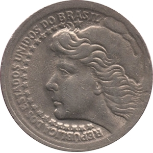

BR · 1965República — 50 cruzeiros · moeda.
República — 50 cruzeiros
Descrição curta
Brasil · 1965 · moeda · regime normativo.
Descrição longa
Ficha do corpus iconocrático para República — 50 cruzeiros: alegoria feminina como tecnologia visual do Estado, classificada no regime normativo.
Fonte & proveniência
- Crédito
- Imagem do corpus ICONOCRACIA: República — 50 cruzeiros.
- Direitos
- Uso acadêmico e curatorial; verificar direitos junto à instituição detentora antes de reutilização comercial.
- Licença
- Todos os direitos reservados salvo indicação específica da fonte.
Dados canônicos
Esta ficha é gerada a partir de data/corpus.json. Última geração: 2026-06-24.